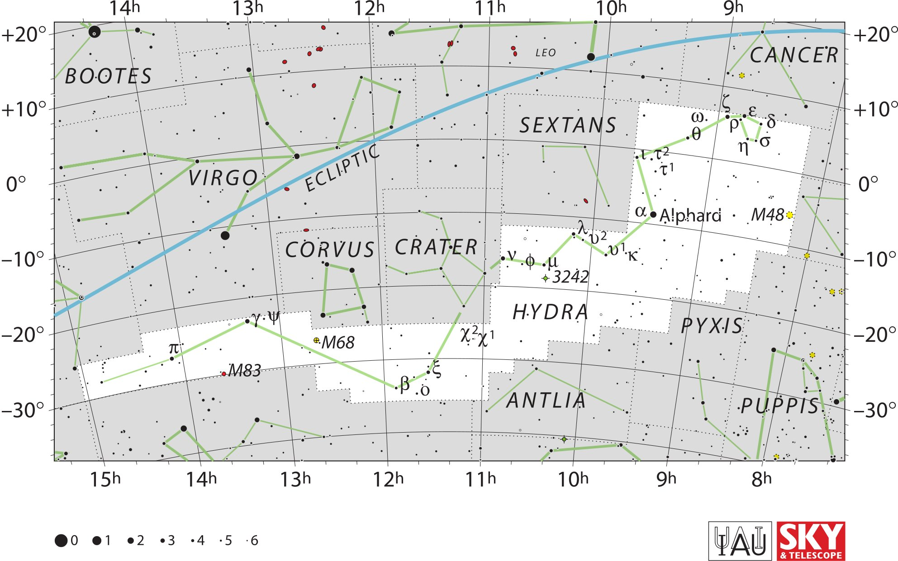

<div data-role="page" id="hydra" data-theme="a">

	<div data-role="header">
		<a href="#home" data-icon="back" data-rel="back">Back</a>
		<h1>Hydra</h1>
		<a href="#home" data-icon="home">Home</a>
	</div>

	<div data-role="content">

		<div class="cssImageMap">

			

			<a href="../messier/m48.html" class="messier" data-x="1650"
				data-y="440" data-width="120" data-height="70"></a>

			<a href="../messier/m68.html" class="messier" data-x="670"
				data-y="720" data-width="150" data-height="70"></a>
				
			<a href="../messier/m84.html" class="messier" data-x="480"
				data-y="790" data-width="150" data-height="70"></a>


			<a href="bootes.html" class="constellation" data-side="left" data-x="130" data-y="130"
				data-width="250" data-height="70"></a>

			<a href="virgo.html" class="constellation" data-side="left" data-x="410" data-y="360"
				data-width="200" data-height="70"></a>

			<a href="corvus.html" class="constellation" data-side="left" data-x="620"
				data-y="520" data-width="220" data-height="70"></a>

			<a href="crater.html" class="constellation" data-x="860"
				data-y="510" data-width="200" data-height="70"></a>

			<a href="sextans.html" class="constellation" data-side="right" data-x="1130"
				data-y="240" data-width="250" data-height="70"></a>
				
			<a href="cancer.html" class="constellation" data-side="right" data-x="1650"
				data-y="90" data-width="220" data-height="70"></a>

		</div>

		<div id="here">
			<h2>Hydra</h2>

			<p>Image Credit: IAU and Sky & Telescope magazine (Roger Sinnott
				& Rick Fienberg)
		</div>
	</div>
</div>
